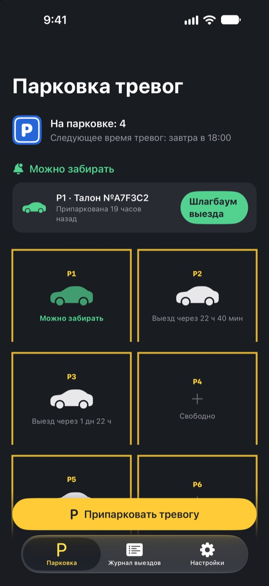
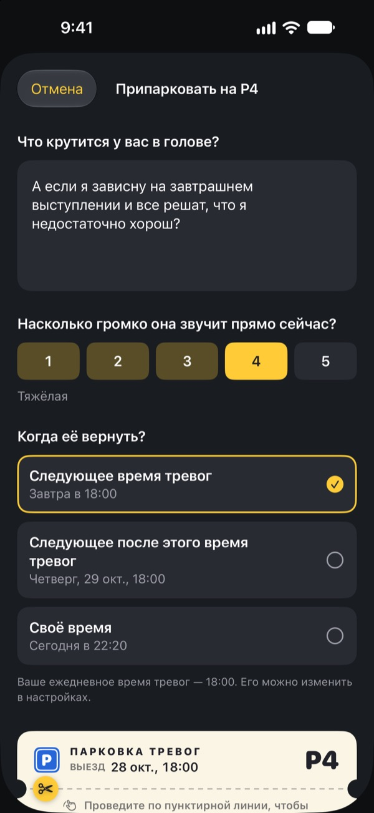
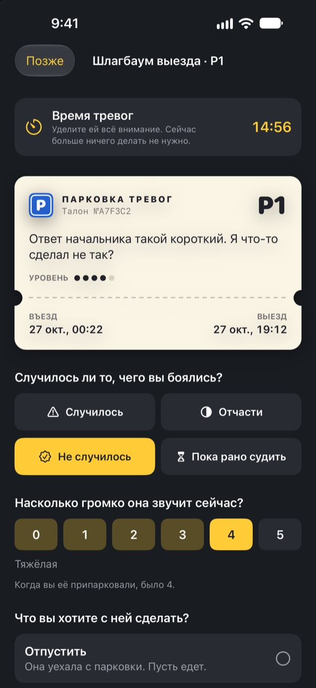
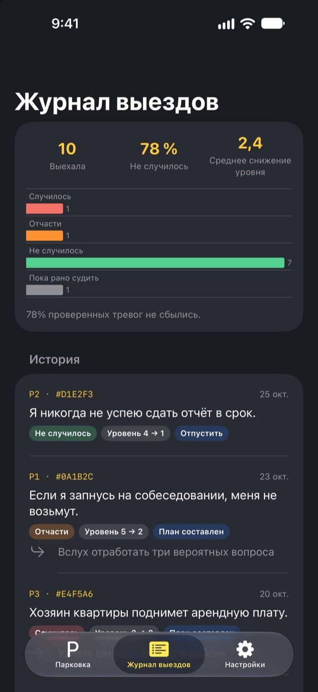

Припаркуйте тревогу.
Заберёте позже.
Запишите то, что крутится в голове перед сном, и оставьте это на парковочном талоне. Мы вернём его во время тревог. А до тех пор носить его с собой не нужно.
Все функции бесплатны. Без рекламы и без аккаунта.

Припаркуйте одну тревогу
Оставьте пример или напишите то, что беспокоит вас сейчас. На парковке тревога размывается, а во время тревог вы достаёте её снова.
Свет погас, а мысли не унимаются?
Стоит лечь, как всё начинается: фраза, сказанная днём, завтрашняя встреча, сообщение, на которое так и не ответили. Чем сильнее стараешься не думать, тем громче звучит. «Парковка тревог» не просит прогонять тревогу. Вы записываете её, даёте ей место и выделяете время, чтобы с ней разобраться.
Записали, и голова свободна
Запишите тревогу так, как она звучит в голове, и отметьте, насколько громко она звучит сейчас, от 1 до 5. Оторвите талон, и тревога останется на парковке, размытая.
Если она снова подъедет, скажите ей: у тебя уже есть место. Твоё время придёт, но не сейчас.

15 минут во время тревог
Каждый день во время тревог приходит напоминание. У шлагбаума выезда вы перечитываете тревогу, проверяете, случилось ли это на самом деле и насколько громко она звучит теперь.
Потом отпускаете её, превращаете в один маленький следующий шаг или паркуете до следующего времени тревог.

Видно, как часто тревоги сбывались
Чем больше тревог выехало, тем яснее журнал выездов показывает, какая доля сбылась и насколько снизилась их сила.
Тревога обычно рисует будущее хуже, чем оно оказывается. Чем больше записей, тем меньше веришь следующей.

Начать можно в три шага
- 1
Выберите время тревог
При первом запуске выберите, когда каждый день будете разбираться с тревогами. Потом его можно поменять в настройках.
- 2
Припаркуйте настоящую тревогу
Сразу припаркуйте то, что вас беспокоит, и заметьте, как меняется её сила до и после.
- 3
Разрешите напоминания о выезде
Во время тревог придёт напоминание, где указан только номер места.
Почему это работает
- Тревожиться в отведённое время
- Те, кто перенёс тревоги на короткий ежедневный отрезок, стали тревожиться меньше, реже испытывали беспокойство и проблемы со сном. (Borkovec и др., 1983; McGowan и Behar, 2013)
- Записать, чтобы отпустить
- Конкретный план не давал незавершённым делам вторгаться в мысли, а пять минут записей перед сном помогали быстрее уснуть. (Masicampo и Baumeister, 2011; Scullin и др., 2018)
- Проверить, что случилось на деле
- Когда люди с хронической тревожностью записывали свои тревоги, 91 % из них не сбылись. (LaFreniere и Newman, 2020)
«Парковка тревог» основана на откладывании тревог, приёме когнитивно-поведенческой терапии (КПТ), который изучают уже десятки лет.
Всё бесплатно
Бесплатно
- Неограниченное число мест
- Ежедневные напоминания во время тревог, своё время выезда
- Шлагбаум выезда и журнал выездов
- Аналитика выездов: сколько сбылось и насколько снизилась сила
Чаевые, если хотите
- Если приложение помогло, можно оставить разработчику небольшие чаевые
- Маленькие, средние или большие, на ваш выбор
Чаевые ничего не открывают. Без них всё работает так же.
Ни рекламы, ни аккаунта, ни серверов, ни инструментов аналитики. Всё, что вы пишете, остаётся на вашем iPhone.
Частые вопросы
Как изменить время тревог?
Во вкладке «Настройки», в пункте «Время тревог». Новое время действует для тревог, которые вы паркуете после этого. Уже припаркованные сохраняют прежнее время выезда.
Не приходят напоминания о выезде.
Проверьте раздел уведомлений во вкладке «Настройки». Если уведомления выключены, нажмите «Открыть настройки iOS» и включите их. При включённом фокусировании или режиме «Не беспокоить» напоминания могут приходить беззвучно. Даже без напоминания тревоги, у которых подошло время, отмечены на парковке как готовые к выезду.
Видна ли моя тревога в уведомлении?
Нет. В уведомлении только номер места, например «P3 готово к выезду». Саму тревогу видно, только когда вы открываете приложение и подходите к шлагбауму выезда.
Можно посмотреть тревогу раньше времени?
Нажмите на её машину на парковке и выберите «Отправить к шлагбауму выезда сейчас». Но откладывание лучше работает, когда вы ждёте. К времени тревог большинство из них кажутся меньше.
Можно перенести записи на новый iPhone?
Всё хранится только на iPhone, без аккаунта и синхронизации. Если восстановить новый iPhone из резервной копии iCloud или компьютера либо воспользоваться «Быстрым началом», записи перенесутся вместе с данными других приложений.
Как удалить записи?
Во вкладке «Журнал выездов» смахните запись влево, чтобы удалить её. Если удалить приложение, всё будет стёрто.
Это терапия?
«Парковка тревог» является инструментом самопомощи, основанным на откладывании тревог из КПТ. Это не медицинское изделие, и оно не заменяет профессиональную диагностику или лечение.
Что делать, если совсем тяжело?
Если тревога захватывает ваши дни или вы думаете о том, чтобы причинить себе вред, пожалуйста, не оставайтесь с этим один на один. Позвоните по номеру экстренных служб 112 или на местную линию психологической помощи. Расскажите близкому человеку, которому доверяете, и попросите побыть рядом.
Вопросы и пожелания пишите на leeo@kakao.com.